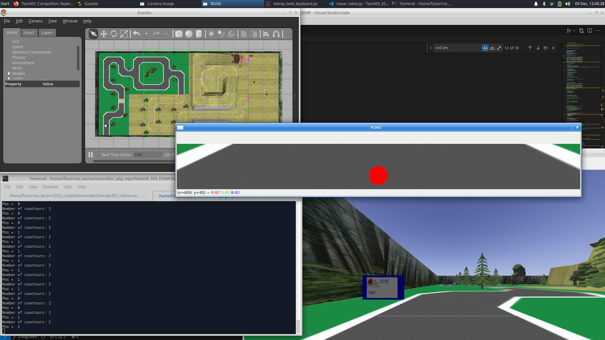
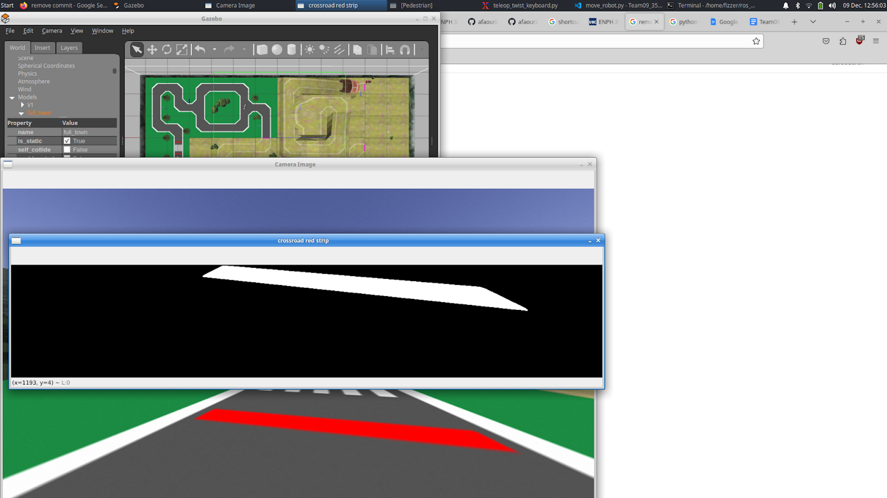
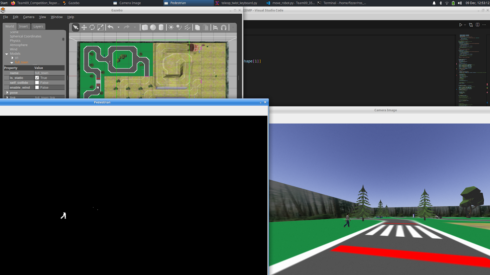
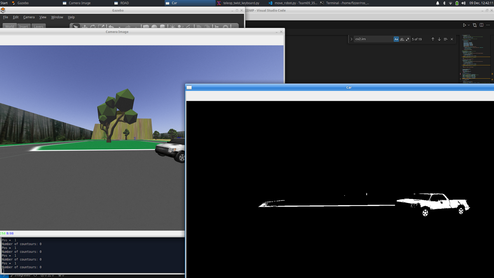
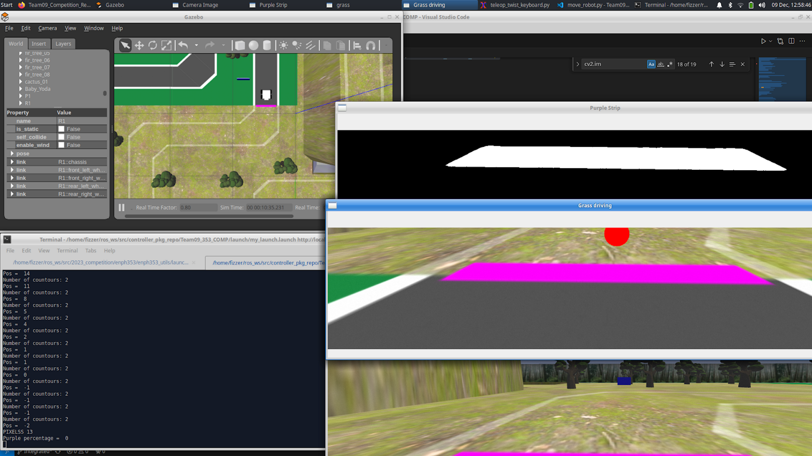
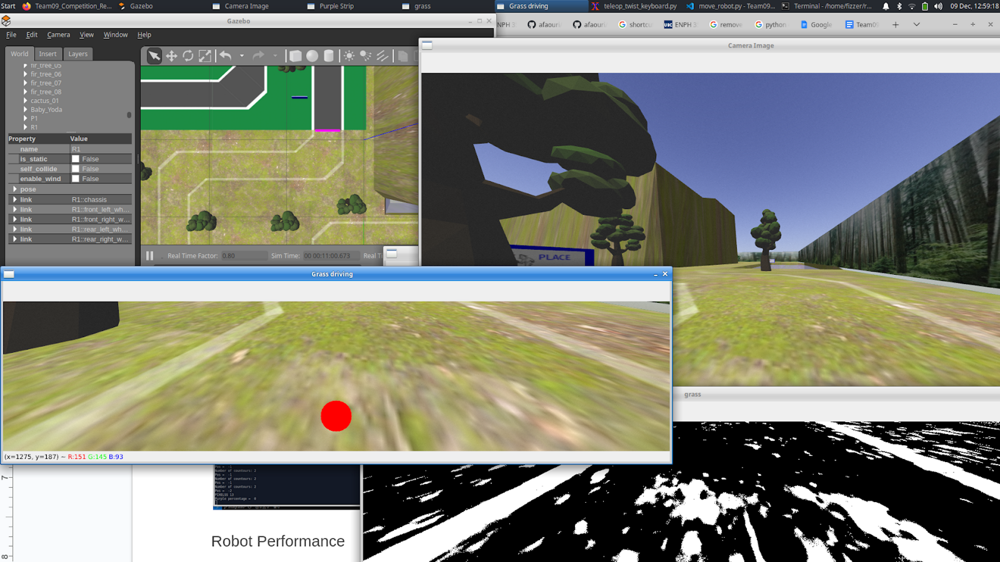
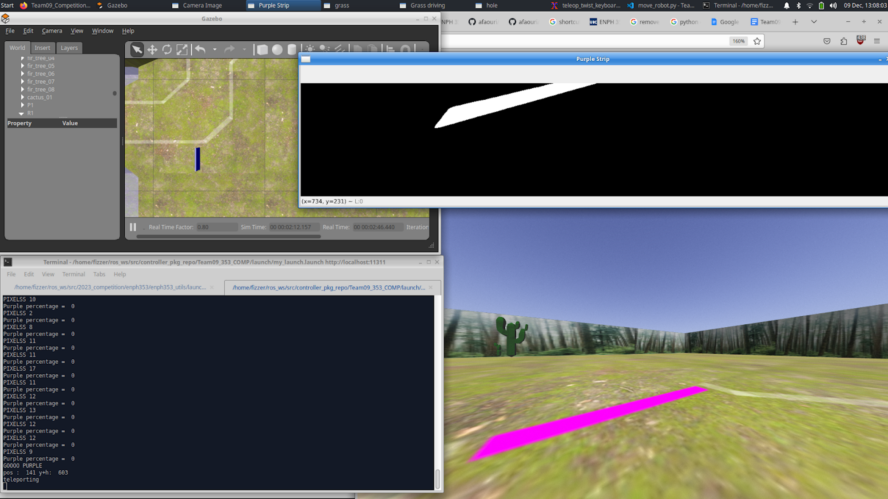
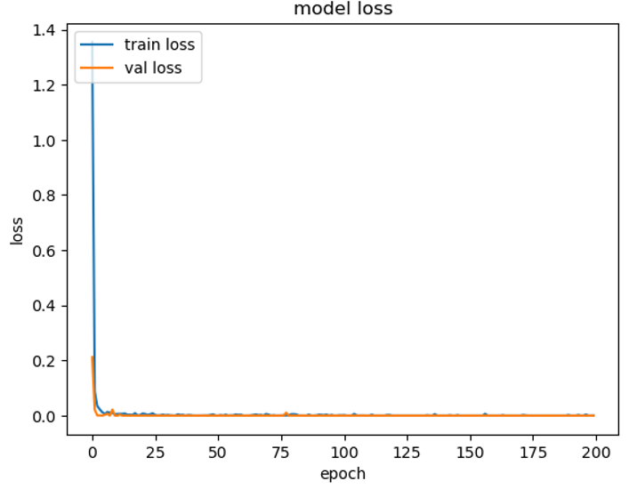
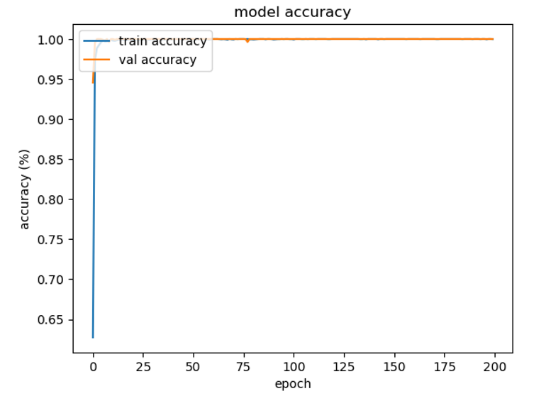
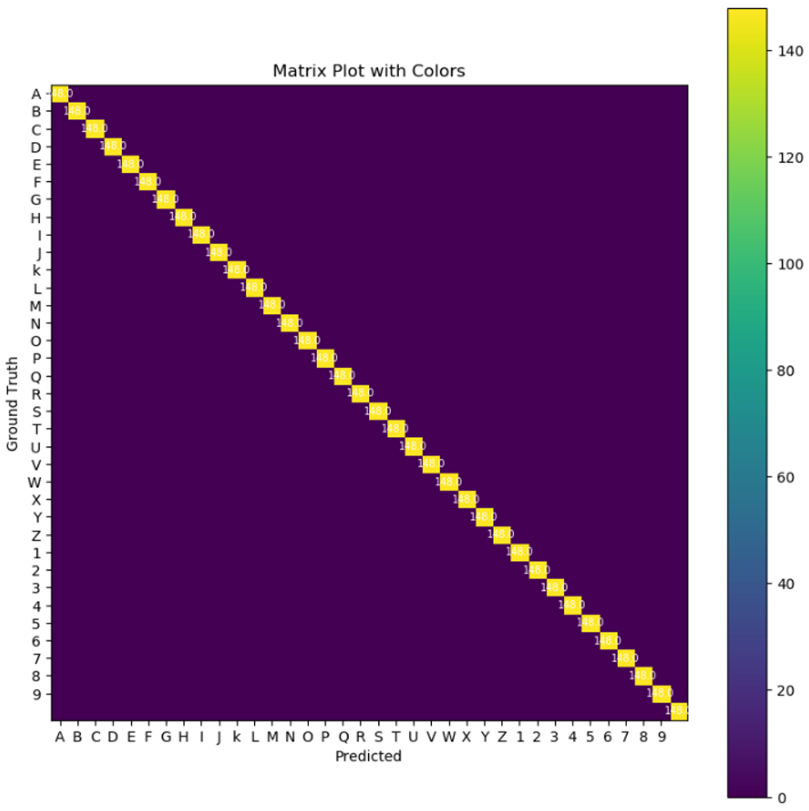

The video above may take a while to load sorry for the inconvenience. It is a sped up version of one of the successful runs that the robot has made
For this project, I programmed the robot to do the following:
- Drive on the road using PID and detect a pedestrian and a car to avoid colliding with them
- Detect the clues on the side of the road and take clear images of them
- A Convolution Neural Network that takes the images of the clues as input and returns the text that is in the image
Driving
For the driving, I used PID to navigate the course. To start with, I created a class for all the functions I created.
The class had an init function and in it, I initialized the subscriptions and publications, and I initialized global variables that were used later in the code
The main function for driving was camera_callback. This function would be called every time the camera sends a new frame.
The code is split into different segments based on where we are driving on the map
Part 1 is driving on the road
For this part, I used an HSV mask to filter out everything in the frame other than the white lines on the side of the road
Then I would find the contours put them in a list and sort that list from largest to smallest contour
After that, I would calculate the midpoint between the biggest two contours.
{kind=link}

Then I would use the difference between the midpoint (red circle) and the center of the frame to determine the angular velocity the car should have.
The variable self.pos is the value of the angular velocity.
This code is used when the crossroad is not in view. Therefore if the crossroad is not in view then I publish the velocity.
When I reached the crossroad. I use another HSV filter on the original frame to filter out everything but the red color and then I would look for the number of pixels of red, if they are greater than 5% of the pixels in frame then I change the variable no_crossroad to false.
{kind=link}

That triggers the handle crossroad function, in this function I stop the car by setting the velocities to zero
Then I would use an HSV filter to filter everything but the pedestrian, I used the color of the pedestrian's pants for this filter. I then would find the centroid of the pedestrian and if it is between 600 and 700 (this is about the center of the crossroad) then I would check if the pedestrian is going to the right by checking if the previous centroid is smaller than the current centroid.
{kind=link}

Then the car drives normally until we reach the roundabout. Here the function car handler is triggered, inn that function I use an hsv filter to filter everything but the car, then I would monitor the number of pixels of the car until it is 9500, that is the point when the car passes by the entrance of the roundabout after that happens I have a delay and the robot makes a left turn into the roundabout.
{kind=link}

Then I make the saw_car variable True so that this code does not trigger again
After that, my objective is for the car to exit the roundabout. When the number of contours in view is one and the contour is on the right that means we are at the exit because there is no white line on the left side at that point of the roundabout.
To make sure this piece of code does not trigger anywhere I used a variable to indicate that the robot is in the roundabout and this has to happen for 11 frames in a row. Once that happens the car makes a left turn and exits the roundabout.
After that, I used an hsv filter to remove everything but the purple/pink line in the frame. Once the purple pixels in view are greater than 10% I would turn the variable on_grass to true
{kind=link}

Part 2 is driving on the grass
I first apply an hsv filter to remove almost everything but the lines on the side of the road. The problem here is that there are a lot of patches of grass that have the same colour as the lines on the side of the road. Therefore I wrote a code that would check if a contour is rectangular for the four largest contours in view
Then I would find the y value of each rectangle and I would choose the two contours with the smallest y (this means they were closest to the top of the frame which is what the sidelines should have)
Then I would use the same code from the on-road section to find the midpoint between both lines and make the car follow that.
{kind=link}

I referred to Contour Features in OpenCV (OpenCV, 2023) to learn about contours and their functions which I used in my code. I used the contour area function to sort the contours from largest to smallest which helped me find the contours of the sidelines as they were one of the largest if not the largest contours in the frame and I used the bounding rectangle function to find the y values of the contours which I later used to select the contours with the closest y values to the top of the frame as those were the contours of the sidelines.
Lastly, I would again look for the purple pixels in the frame and once that is more than 10% of the pixels in the frame the robot starts driving towards the line so we can teleport to the next pink line and get the 7th clue.
{kind=link}

Clue detection
The robot is always looking for the clue boards, theoretically, this slows down performance. However, the code was relatively simple and with a real-time factor of 0.8 everything integrated well.
To detect a clue board a simple blue mask is applied to the frame. The resulting frame would then be processed for contours and the largest one identified, which is then cropped according to the contour’s bounding rectangle. The cropped image is only taken into account if its dimensions are of a reasonable scale, if the board contour is a quadrilateral and the position of the board is such that the board is fully in view, i.e. is not half in the frame. This all occurs in the detect_clue method.
If a clue is detected then it is passed into the perspective_clue method where the image is inverted and a mask is used to find the corners of the white section of the board. These points are then sorted and used to apply a perspective transform using cv2’s warpPerspective method.
All this processing was vital to retrieve an image good enough to use to predict the letters using the neural network. These methods were planned and were very straightforward to implement with the help of Opencv2 documentation.
A list is created with the images and is appended as long as there is a clue board in sight. As soon as it is lost from sight the message is sent to the score tracker.
Data Engine Used
Procuring data was a long process filled with trial and error. The data used was one of two sets, one generated using cv2 and the other collected from the environment itself. The generated data was a set of single letters rotated, and blurred to different degrees.
The rest of the data was collected from the simulation. To mitigate any bias that could arise from lighting or other uncontrolled variables, an image of each letter was selected from each individual board. These letters were then isolated into a list of images using some code and then augmented similarly to the generated data. The network trained on this data gave accurate predictions and therefore was the one finally used.
Neural Network Architecture
The following is the network architecture used in this application:

The architecture used is identical to that used in the lab and mentioned in the lecture with input shape =(50, 50, 1). All activation functions were set to Relu except the last layer which was softmax.
Training Parameters
After getting reasonable quality training data not much change was done to the training parameters as the neural network trained performed well. The learning rate was dropped from 1e-4 as that created to much oscillations in the loss
The following are the training parameters used:
- Learning rate = 1e-3
- Number of epochs= 200
- Dropout = 0.5
- Data set size and composition: 5328 characters of equal distribution, 123 generated per letter, the rest was augmented sim data.

Training and Validation Test performance
The model loss followed as expected, if not converging too fast. That was suspicious at the start but the trained model worked flawlessly upon integration. The validation data loss was low from the start but that is expected as they are sourced from the same place as the training data. The model accuracy follows similarly to the loss be it starting low. Again this was suspicious. However, upon further analysis, it can be seen that due to our batch size most, if not all, letters would be introduced to the network within the first couple of epochs. Therefore, it seems the network learned quickly and the variables started somewhere close to a minimum in the data space.
{kind=link}

{kind=link}

{kind=link}
